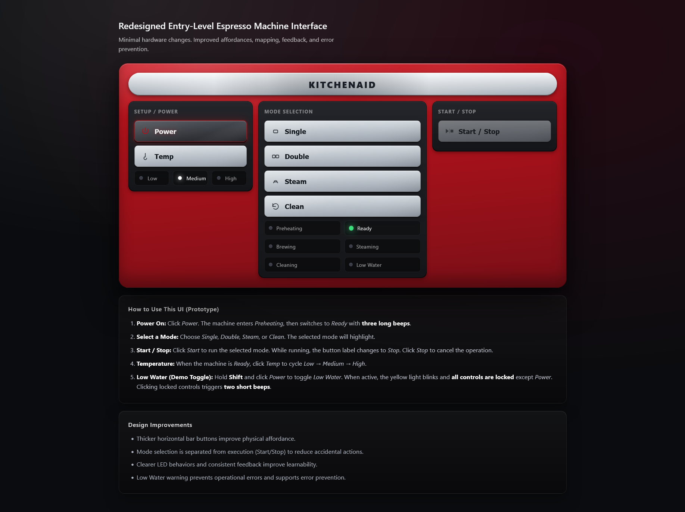
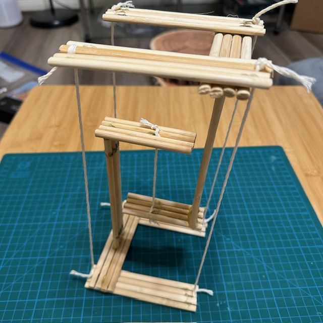
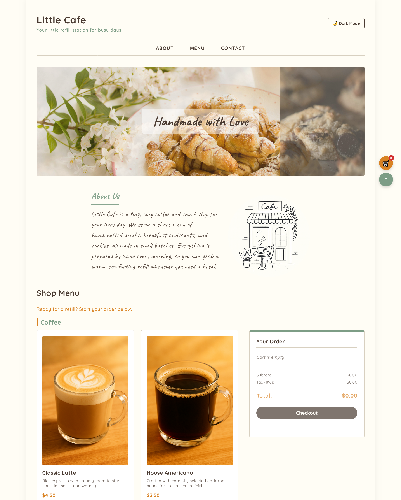
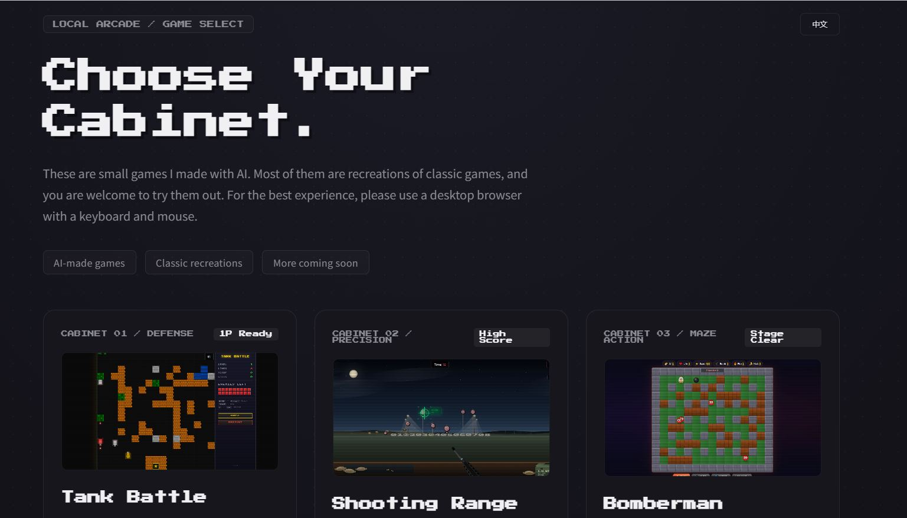

ICC Houston Website Redesign
Redesigning Houston's oldest nonprofit Chinese school website — from a fragmented, outdated experience into a unified, parent-friendly platform. Now live at icc-houston.org.
View Case StudyUX/UI · Front-End · Content Design
I'm Huiying — a designer who connects user needs with clean, intentional interfaces. Currently completing my degree at Arizona State University and looking for opportunities in UX/UI and front-end design.
View My WorkSelected Work
Redesigning Houston's oldest nonprofit Chinese school website — from a fragmented, outdated experience into a unified, parent-friendly platform. Now live at icc-houston.org.
View Case Study
Applying Norman's design principles to uncover usability failures in a semi-automatic espresso machine and propose a clearer, safer interaction model.
View Case Study
Designing a build guide for mixed-ability users — and discovering where documentation fails through real usability testing.
View Case Study
A single-page e-commerce concept for a boutique handmade cafe — built with semantic HTML5, vanilla JavaScript, and a sticky shopping cart experience.
View Case Study
A multi-page hiking trail website built from wireframe to live deployment — full front-end lifecycle across 6 pages, W3C validated, deployed on GitHub Pages.
View Case Study
A collection of browser-based games built as a side project in collaboration with AI — exploring how design and interactivity come together in a playful context.
Visit SiteAbout
I focus on clarity at the intersection of UX thinking and front-end craft—how things look and how they work. My process starts with user goals, then moves from structure to detail: information architecture, interaction decisions, usability checks, and visual refinement.
This site was built in collaboration with AI. I believe knowing how to work with AI tools is a genuine skill — and the design decisions here are mine.
Contact
I'm currently open to full-time roles and internships in UX/UI design, front-end development, and digital content. I'd love to hear from you.
Send a message